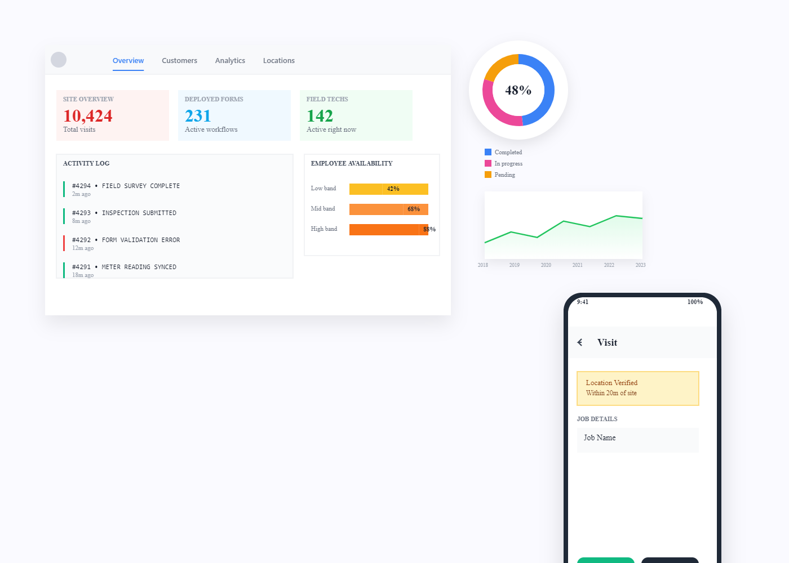
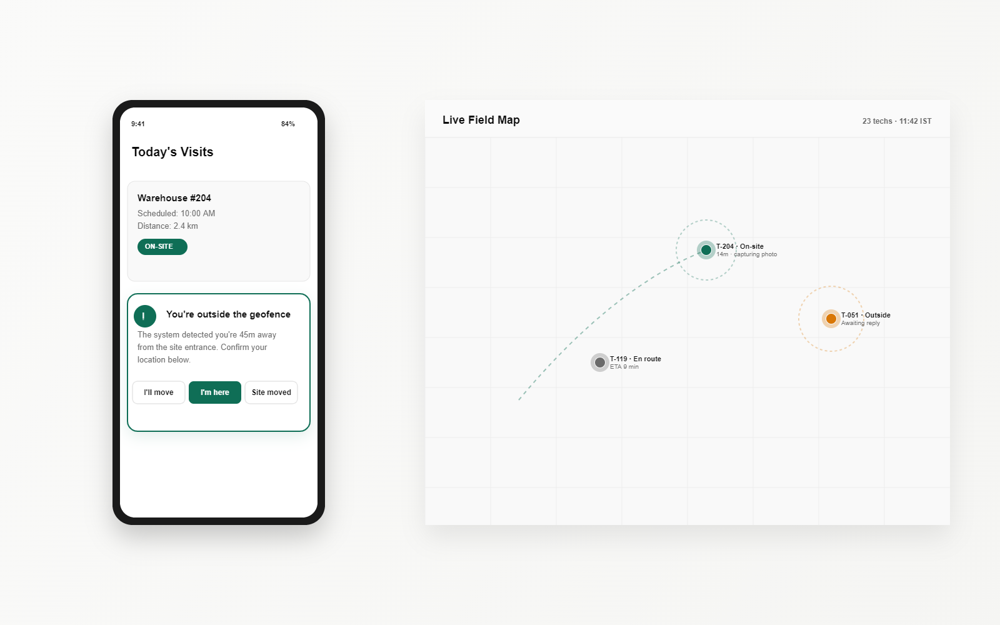

01 / Strategic Thinking
I identify gaps before building.
I worked alongside PMs and CTOs at Field Proxy to redirect product direction, not just execute briefs. I name the problem before I'm asked to design the solution.
Both case studies start from an enterprise pain point I named myself, and end with measurable churn and workload reductions you can verify.

Identified the market gap, convinced stakeholders, learned JSON to understand what was actually possible, and rebuilt the entire system.

Dual-sided research with techs and ops managers. A geo-fence that nudges instead of polices, and a live map that replaced an 800-row dashboard.
Not a skills list. A short list of behaviours your PM, CTO and account team will feel inside two weeks of me starting.
I worked alongside PMs and CTOs at Field Proxy to redirect product direction, not just execute briefs. I name the problem before I'm asked to design the solution.
AI is not a tool I use occasionally. It is how I prototype, iterate, and ship. I integrated AI directly into Field Proxy's core platform — and use it daily across web and mobile work.
I learned JSON to understand what was possible in the rebuild, and shipped better product because of it. Engineers trust the spec when the designer can read the schema.